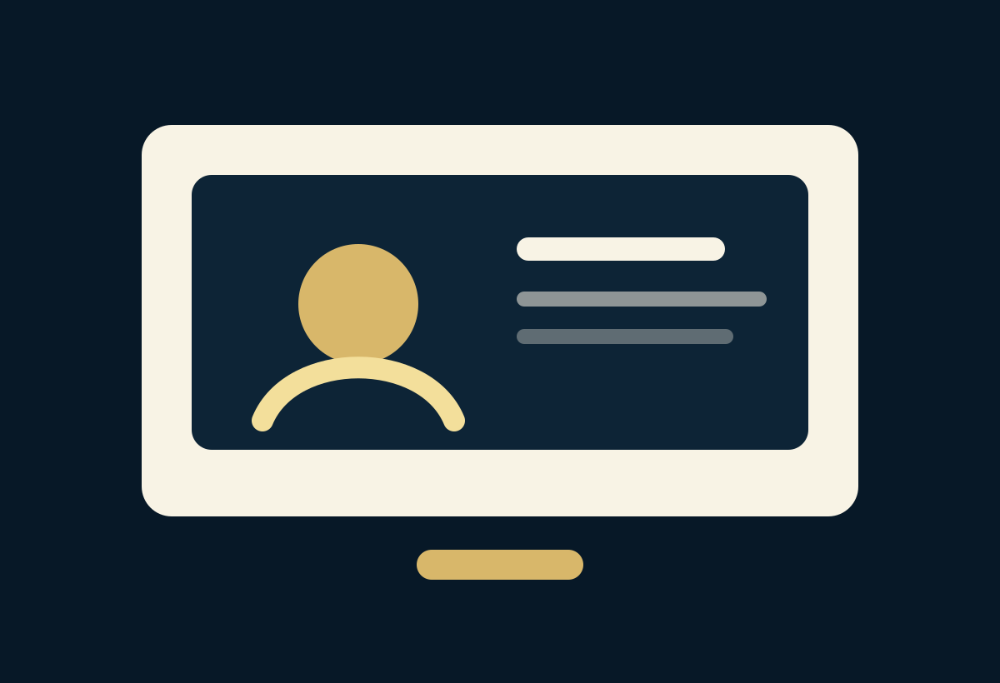
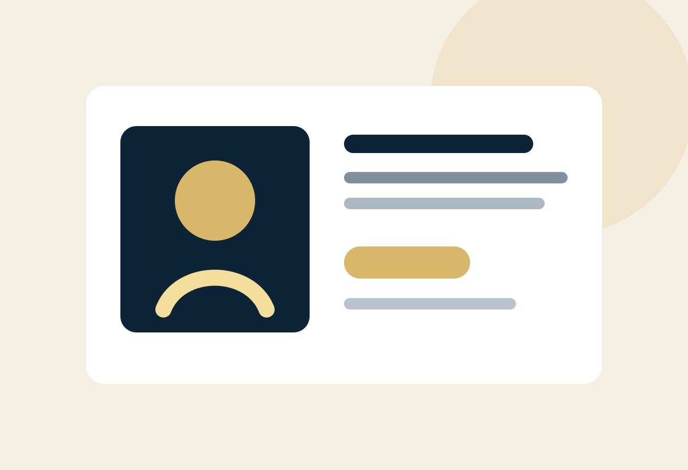

Consulta Penal Virtual
Orientación penal por videollamada o WhatsApp para personas que necesitan revisar su caso antes de desplazarse o tomar decisiones.

Qué se puede revisar en una consulta virtual
La consulta permite ordenar hechos, revisar documentos iniciales, identificar riesgos y definir si se necesita actuación presencial o acompañamiento en audiencia.
- Citaciones de Fiscalía
- Denuncias o querellas
- Chats, contratos y comprobantes
- Cronología de hechos
Cómo aprovechar mejor la consulta
Antes de la reunión conviene enviar documentos legibles, fechas importantes, nombres involucrados y una descripción breve del problema.
- Número de proceso si existe
- Ciudad y autoridad
- Fecha de audiencia o citación
- Pruebas disponibles

Preguntas frecuentes
Respuestas generales. Cada caso debe revisarse de forma individual.
¿Atienden consultas virtuales?
Sí. La consulta virtual permite revisar el caso, documentos iniciales y posibles pasos sin que la persona tenga que desplazarse de inmediato.
¿Trabajan casos fuera de Bogotá?
La consulta inicial puede realizarse de forma virtual. El acompañamiento presencial en otra ciudad depende de la etapa, urgencia y viabilidad logística del caso.
¿Puedo pedir orientación antes de que avance el caso?
Sí. La asesoría preventiva es recomendable cuando existe riesgo de denuncia, conflicto penal, citación o exposición a una investigación.
¿Qué debo llevar a una consulta penal?
Lleve citaciones, denuncias, mensajes, documentos, datos de testigos, audios, videos, correos, número de proceso y una cronología básica de los hechos.
¿Pueden revisar un expediente penal?
Sí. La revisión del expediente permite identificar etapa procesal, riesgos, pruebas, decisiones pendientes y posibles líneas de actuación.
¿Cómo agendo una consulta?
Puede escribir por WhatsApp, llamar o completar el formulario. Lo ideal es indicar tipo de caso, ciudad, etapa y si existe alguna audiencia o citación próxima.
Cuéntenos brevemente su caso
Indique ciudad, tipo de asunto, etapa del proceso y si tiene una fecha próxima de citación o audiencia.
Hable hoy con un abogado penalista
Reciba orientación confidencial y defina los próximos pasos antes de que el caso avance sin estrategia.